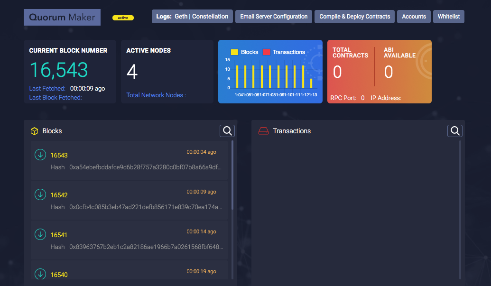

Setting up a local private TestNet¶
ONE CLICK SETUP¶
ledgerium_setup.sh is a unix bash file that downloads and deploys one Ledgerium node (consists of Geth, Constellation/Tessera, and GovernanceUI Docker containers) in a single click.
Download <https://github.com/ledgerium/ledgeriumsetup/>
To download the installer go to the console and type
- git clone https://github.com/ledgerium-io/ledgeriumsetup.git
- cd ledgeriumsetup
- ./install_dependencies.sh
This script does the following:
- Install prerequisite softwares (Docker and NodeJS) to run ledgerium tools.
- Add $USER to docker group, to avoid using sudo before docker commands
- Creates a docker network
Once the dependencies are done installing go ahead and run the node
- ./ledgerium_setup.sh
This script prompts user for 3 parameters, mode addon, numbers of nodes, and mnemonics for each node. The script creates a docker-compose file and brings up the cointainers
MANUAL SETUP¶
Prerequisites¶
- NodeJS
- NPM
- Docker
Downloading¶
Start up the terminal and enter the following commands:
- git clone https://github.com/ledgerium-io/ledgeriumtools.git
- cd ledgeriumtools
Ledgerium tools generates a docker-compose yaml for deploying N nodes with IBFT consensus
Update initialparams.json¶
Edit this file before running the application
mode: Change mode type (full/addon)
- If mode type is full, this application will create a ledgeriumnetwork folder outside ledgeriumtools which has static-nodes and externalised genesis files.
- If mode type is addon, get latest ledgeriumnetwork files from github and paste those files under ledgeriumtools/output/tmp
externalIPAddress : To host a node for a network that can be connected to by anyone outside your LAN
nodeName : Hostname of the machine where nodes will be hosted.
domainName : Domain name of the external IP Address. domainName is needed for every node to which any client wants to send transactions or do “geth attach”
Run ledgeriumtools application¶
To start the application, run
- node index.js
Takes input from the command line interface, prompts to enter number of menmonics
- Number of Mnemonics : 2
- Enter Mnemonic 0 : *******************************
- Enter Password 0 : ***********
- Enter Mnemonic 1 : *************************************
- Enter Password 1 : ***********
Enter the Mnemonics and password which wilsl generate the nodekeys and password
The number of nodes brought up is equal to the number of keys/menmonics provided in the file i.e. n keys signifies n nodes with the respective keys as coinbase/etherbase
The docker file will be generated in the output folder.
Start the Ledgerium Network¶
Change directory to output and use
- docker-compose up -d to start up the nodes
- docker-compose down to bring down the nodes
Confirming Ledgerium Network is up and running correctly¶
We can see if the application ran correctly by going to ethstats on http://localhost:3000
- This will show us:
- Block data and minting status
- Validator/Node data
- Transactions statistics

We also have the Quorum dashboard accessible by http://localhost:9999
Note :
- This application is currently using constellation as the private transaction manager.*
- Don’t use the -v option to bring down the nodes as the current blockchain data will be lost*
- For subsequent runs make sure the tmp dir created in output folder is deleted*